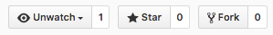
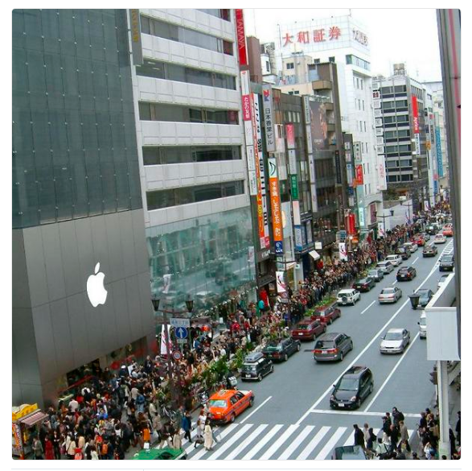
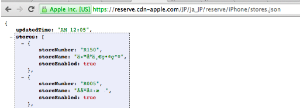

OPENSOURCE
About Me
Theeraphol Wattanavekin (A)
Now - Software Engineer @ G
Sometimes - Mua @ Boonmee Lab
Previous - Infra Engineer @ Rakuten
github.com/parnurzeal
or
www.parnurzeal.com
- "Simplified HTTP Request" library for Golang
- Node.js SuperAgent style
- 771 stars, 99 forks, used by 77 packages
resp, err := http.Get("http://example.com/")
m := map[string]interface{}{
"name": "backy",
"species": "dog",
}
mJson, err := json.Marshal(m)
if err != nil {
panic(err)
}
contentReader := bytes.NewReader(mJson)
req, err := http.NewRequest("POST", "http://example.com", contentReader)
if err != nil {
panic(err)
}
req.Header.Set("Content-Type", "application/json")
req.Header.Set("Notes", "GoRequest is coming!")
client := &http.Client{}
resp, err := client.Do(req)
request
.post('http://example.com')
.send({ name: 'backy', species: 'dog' })
.set('Notes', 'Superagent is coming!')
.end(function(err, res){
if (err || !res.ok) {
alert('Oh no! error');
} else {
alert('yay got ' + JSON.stringify(res.body));
}
});
GoRequest to Rescue

m := map[string]interface{}{
"name": "backy",
"species": "dog",
}
mJson, err := json.Marshal(m)
if err != nil {
panic(err)
}
contentReader := bytes.NewReader(mJson)
req, err := http.NewRequest("POST", "http://example.com", contentReader)
if err != nil {
panic(err)
}
req.Header.Set("Content-Type", "application/json")
req.Header.Set("Notes", "GoRequest is coming!")
client := &http.Client{}
resp, err := client.Do(req)
request := gorequest.New()
resp, body, errs := request.Post("http://example.com").
Set("Notes","gorequst is coming!").
Send(`{"name":"backy", "species":"dog"}`).
End()
iPhone6 launched!
iPhone Availability (Public JSON)
Go-reserve-iphone6
See Infra PPT
Advertising
- golang-nuts mail group
- facebook golang group
- Got notice... 19 stars
"gorequest just worked for me... couldn't be easier"
Now
771 stars, 99 forks, used by 77 packages
Why people like it?
- Good Idea
- Good Documentation
- Good Support
Good Meaningful Logo :P
What I gained?
Just Ways Too Many :)
- Fast & Fun way of learning Go
- Do things that matter (useful for other people)
- Practice collaboration & communication skills
- Better profile
- etc..
from Community (Issues & PR)
Opensource Way
To create A "Better" Software

"Great Power comes with Great Responsibility"
Complaint is good, issue is great, PR is awesome!
Opensource Way
Fb page: Happy the Scottie